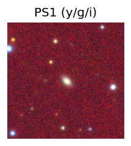
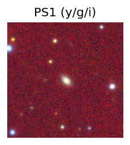
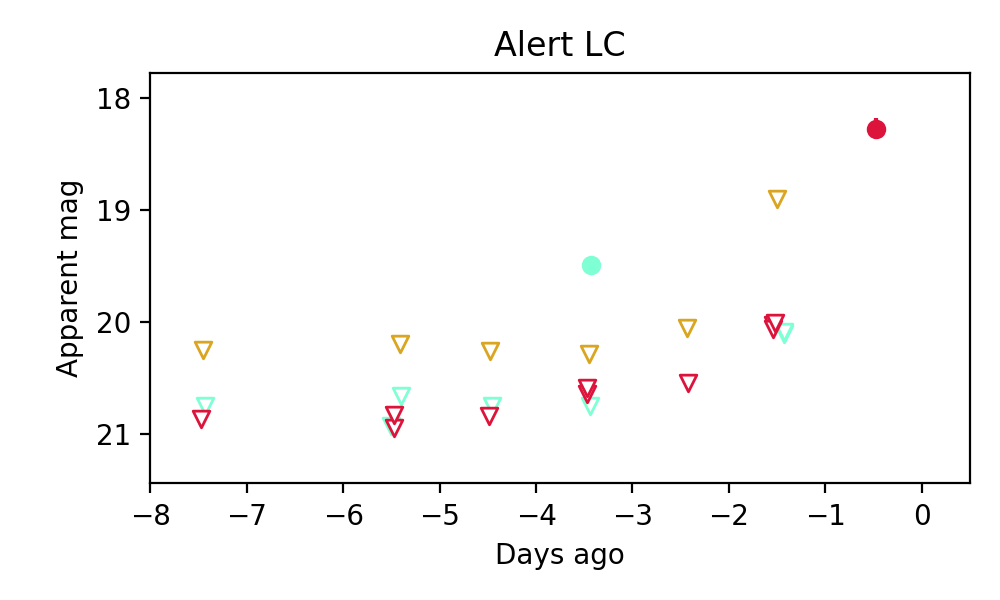

Candidate List 20250903Previous Day Next Day
Section 1: New Sources (age<1d) Section 2: Old (1-5d) sources observed last nightplaceholder
Section 2: Older Sources Observed Last Night (3)
0. ZTF25abmhxft (FBOT?) [Back to Top] [Share] [Trigger Swift] [Fritz] [Lasair]RA, Dec: 279.32002, 32.48839 18h37m16.80s, 32d29m18.21sGalactic (l, b): 61.28367, 16.93386 ext(g-r) = 0.079 

PS1: 0 sources in 3 arcsec
LegacySurvey: 1 sources in 3 arcsec Closest: d = 0.82 arcsec, 209.0 deg (east of north) photoz=0.08 (68% bounds 0.08, 0.1), type=SER peak abs mag = -19.58 (68% bounds -19.33, -19.89)

Extinction-corrected gr color:
From alerts: -0.11 +/- 0.12 mag
Consistent with synchrotron, g-r>0!
Rise Rate:
g: 0.27 mag/day
r: 0.12 mag/day
i: -99 mag/day
Fade Rate:
g: -99 mag/day
r: -99 mag/day
i: -99 mag/day
1. ZTF25abmraup (Afterglow?) [Back to Top] [Share] [Trigger Swift] [Fritz] [Lasair]RA, Dec: 297.33666, 14.43777 19h49m20.80s, 14d26m15.98sGalactic (l, b): 52.44532, -5.84144 ext(g-r) = 0.265

PS1: 0 sources in 3 arcsec
LegacySurvey: 0 sources in 3 arcsec

Extinction-corrected gr color:
From alerts: -0.4 +/- 0.24 mag
Rise Rate:
g: 0.8 mag/day
r: 0.11 mag/day
i: -99 mag/day
Fade Rate:
g: 0.22 mag/day
r: -99 mag/day
i: -99 mag/day
2. ZTF25abojfld (Afterglow?) [Back to Top] [Share] [Trigger Swift] [Fritz] [Lasair]RA, Dec: 302.81758, -16.41673 20h11m16.22s, -16d-25m-0.23sGalactic (l, b): 26.46292, -24.85153 WARNING: 3.52 deg from ecliptic plane ext(g-r) = 0.15
PS1: 0 sources in 3 arcsec
LegacySurvey: 0 sources in 3 arcsec

Extinction-corrected gr color:
From alerts: -1.3 +/- 99 mag
Extinction-corrected gi color:
From alerts: -1.02 +/- 99 mag
Rise Rate:
g: 1.23 mag/day
r: 1.68 mag/day
i: -99 mag/day
Fade Rate:
g: 0.31 mag/day
r: -99 mag/day
i: -99 mag/day